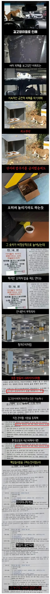

캣맘을 공포에 떨게한 안내문
댓글
??:으아악 나가!
ㅋㅋㅋㅋ 으아악 나가는 진짜.명대사다 ㅋㅋ
책임이요...? 제가 왜요...?
근데 우리아파트도 캣맘때문에 트러블 많아서
이것저것알아보고햇는데
저거 재산피해 발생해도
법적으로 책임 못물린다고 하던데??
뭐가 진실인지…
하 캣만확실한 퇴치법 뭐없냐
너가 그냥 그동네 미친놈 되면 됨. 팬티랑 런닝만 입고 좆맘들이 밥 줄 때 침흘리고 웃으면서 배회하면 당장 사라짐
법정가면 짐. 해당 관리규약에 힘을 줄수 있는 상위 공동주택관리법에 관련 조항이 없음. 그나마 저거에 꼬리내려서 캣맘 사라지면 다행인거..
저게 빌드업 과정 아님? 먹이 주지 말라는 안내문도 붙였고 그로 인한 피해도 명시했고
정 주고 싶으면 등록하고 하라는 대안도 만들어줬는데도 행위를 지속하면 민사적으로 충분히 해볼만한 거 같은데
관련 판례로 해당 고양이들의 상태를 상시로 체크하고 밥을 주고 보호자로 볼수 있다 증거 입증이 가능하면 항상 민사는 가능하지. 저런 규약에는 아직 힘이 없다고 말하는거 ㅇㅇ... 법규 생기면 저렇게 구하고 고양이들 영상만 딸깍하면 될듯
관련 판례나 확실한 내용있어? 나도 알아봤는데 길고양이 밥주고 관리주채라고 민사상 손해배상 청구 진다고 봐서..
그리고 나포함 우리아파트 주민이 대부준 조용하고 나서기 싫어해서 그렇게까진 할사람이 없을거고 캣맘은 카톡장 1:500으로도 싸우는 전투력 만땅인여자라..일단 캣맘등록제 하려고 진행중인거 같은데 민사상 배상책임 없다고 봐서 뻘짓하는걸까봐 걱정임
차갤에서 람보 차주가 변호사 하나 선임해서 승소한거 인증한거 본적있는거라, 그분도 고양이 관리주체와 해당 묘로 인한 피해 인과관계 증명해서 승소함
호랑이풀어
걍 타이레놀로 고양이 죽여
켓맘 밥그릇에 뿌림됨
그건 불법인거 이미 다앎
그럼 개 훈련시켜서 사냥하면 되겠네 어차피 주인없는 재물이니
뭐 어때 법이 물리법칙이라 불가능한것도 아니고 그냥 하면되지 ㅋㅋ
물총인가 물풍선으로 고양이만 타격해서 캣망구 쫒아낸썰 있었을텐디
고양이 관리 주체가 캣맘인거 입증되면 책임 물릴수 있음
관련 판례나 사례가 있어?
저거 등록제 한창 인터넷 떠돌고나서 최근에 배상책임 물릴수없다로 봐서
'민법 제759조' 동물 점유자 책임 성립 가능성
A씨에게 고양이로 인한 차량 손상 피해 배상 책임이 돌아갈 경우, 그 근거는 주로 민법 제759조(동물의 점유자의 책임)에 있다.
민법 제759조 제1항은 "동물의 점유자는 그 동물이 타인에게 가한 손해를 배상할 책임이 있다"고 규정한다. 여기서 '동물의 점유자'란 동물을 현실적·사실적으로 지배하고 관리하는 자를 의미한다.
https://lawtalknews.co.kr/article/JLJBLGQK2HET
증거만 충분하면 가능할듯?
판례는 ㅁ?ㄹ
아 그렇긴하네 땡큐.
차량손해 발생시 그 고양이가 범인이라는 현행범수준의 증거가 잇긴해야겟네 ㅠㅠ 그것때문인가… 차안에서 실제로 죽어버리면 가능할텐데 긁고 튀면 입증이ㅜ어렵긴 할듯 ㅠㅠ
피해를 준 고양이에게 반복해서 밥 준게 확인 되면 밥 준 사람을 실질적 고양이의 소유주로 인정한 사례가 있어서
그 사람이 물어내야 함.
자기가 밥 주는 고양이 엔진룸에서 죽었다고 손배 청구 해서 고양이 값 받고 소유주 인정 되서 차량 수리비 청구 당해서 자살 한 케이스도 있고
반복해서 밥 주는 행위에 대해서 실질적 소유권을 인정해준 판례도 있음.
캣맘 비슷한 개 샹련들이 비둘기맘인데
비둘기맘은 인제 복잡한 절차 없이 밥 주는거 만으로 신고 하면 됨.
비둘기 모이 주는게 불법 됨.
판결문 다 까는거 아니면 반쯤은 다 구라임
타이레놀
차 긁히면 관리사무소에 손배책임 물어라
관리사무소가 적극적으로 야생동물 퇴치한거 입증 못하면 배상해야한다
손해배상 한번 하고나면 관리실에서 제대로 캣맘 조지기 시작한다
오 그것도 좋은방법이네 참고할게
아니길 바랬던 우리집 앞에도 있더라 시발
어디서 캣맘교육이라도 받았나 전국적으로 뭔 지랄인지 모르겠네
최근에 관심갖게 된것뿐이고 캣맘은 옛날부터 이렇게 많았나?
자식 안 낳는 여자들이 늘어서 캣맘도 늘어난거 같아
저렇게 밥 주면 양반이지 비닐봉다리 밥 쳐던지고 가는 미친 년들도 있음.
???: 이제부터 밥 주는 사람 주인으로 생각하겠습니다
오토케이 대입하면 다 설명 된다 개좆병신 같은 한녀들
한다고 하면 바로 표적되어서 커뮤니티 씹창나잖아 ㅋㅋㅋㅋ 그리고 손해배상같은경우고 그사람한테 일괄청구할테고
우리회사도 길고양이 밥주시는 청소여사님 계신데 우리한테까지 밥줘라 물줘라 이래라 저래라 명령조로 해서 진짜 캣맘은 과학이라고 생각했음
미화여사님이 제일 싫어하는게 캣맘인데 아이러니하네
??? : 그건 현실적으로 불가능하죠
모성애를 가축에게 뿜내는 도태 인간들
꺄아악 나가!
이게맞다